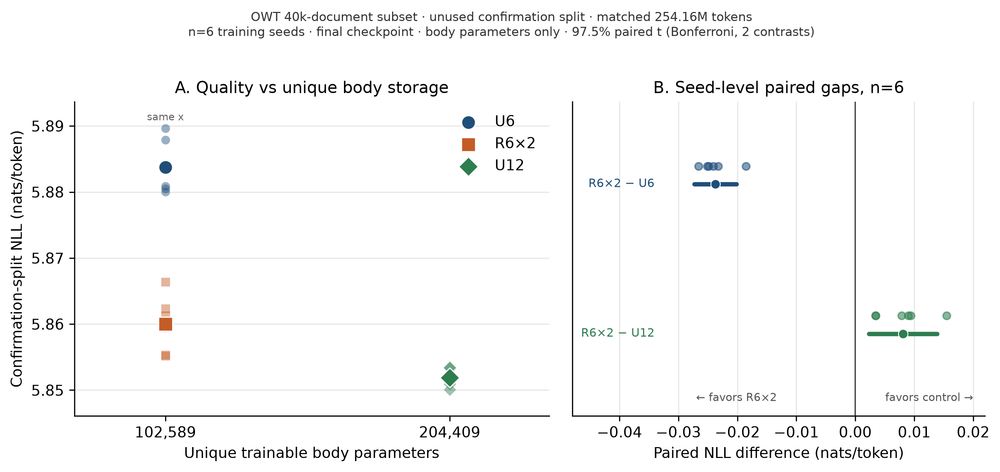

Research note / Machine learning
Recurrent depth in Z1T:
a quality–storage trade-off.
Can a sparse language model reuse depth instead of storing more weights? My first technical report tests a simple idea: apply the same six-block stack twice.
The short version: repeating six blocks lowered perplexity by 2.35% versus applying them once. Compared with twelve unique blocks, it used 49.8% fewer unique body parameters with 0.81% higher perplexity.
A software quality–storage result—not a measured energy saving, and not a halving of the whole model.
Separate what you store from what you execute
In a conventional depth comparison, a deeper model usually both stores more weights and performs more computation. Weight sharing lets us separate those choices: a small stored core can be applied repeatedly.
That distinction is interesting for accelerators that keep sparse programs resident on-chip. Extra unique weights may require more capacity or more program loading. Reusing a resident core could change that trade-off—but first, does the shared model retain useful language-model quality?
I built on Extropic’s Z1T software recipe and compared three architectures. Recurrence here means repeating a stack of residual blocks within the model, not carrying a persistent hidden state across tokens.
| Model | Unique blocks | Applied depth | Body params |
|---|---|---|---|
| U6 | 6 | 6 | 102,589 |
| R6×2 | 6 | 12 | 102,589 |
| U12 | 12 | 12 | 204,409 |
U6 versus R6×2 isolates the benefit of extra computation at fixed unique body capacity. R6×2 versus U12 measures the cost of sharing at fixed applied depth. Each architecture was trained separately at its evaluation recurrence count; this is not a test of adding loops to an already-trained model.
What the experiment found
I ran six training seeds per architecture—18 confirmation runs—on an archived 40,000-document OpenWebText subset. Each run received 254,164,992 target-token presentations, including repeated exposures. Width was 384, context length 256, and sparse body fan-in c = 4. The runs were matched on token presentations, not audited FLOPs.
{kind=link}

At the same unique body capacity, R6×2 improved over U6 by 2.35% perplexity. The mean negative log-likelihood (NLL) difference was −0.0237 nats/token, with a 97.5% paired interval of [−0.0273, −0.0202]. Reusing the weights for a second pass helped.
At the same applied depth, R6×2 had 0.81% higher perplexity than U12. The mean NLL difference was +0.0081 nats/token, with a 97.5% paired interval of [+0.0023, +0.0139]. The deeper untied model was better, but required nearly twice the unique body parameters.
So this is a trade-off, not lossless compression or a claim of equivalent quality. The intervals describe training-seed variability on a fixed holdout, not uncertainty across datasets.
What “half the storage” does—and doesn’t—mean
The 49.8% reduction excludes the token embedding and dense vocabulary classifier. Including those, total trainable parameters are about 38.75 million for R6×2 and 38.85 million for U12. The result concerns the sparse body, not a 50% reduction in total model memory.
Likewise, another application of a neural block is not simply another cheap Gibbs update. Whether recurrence saves deployment energy depends on what stays resident, what gets reloaded, and the cost of execution and readout. The report explores a conditional six-block-residency schedule; it does not establish a measured hardware win.
- Software, not silicon: these runs used H100 GPUs and float32 model arrays. Fan-in four is sparsity, not 4-bit precision. No TSU energy, latency, or silicon area was measured.
- A limited regime: one model width, one context length, and an OpenWebText subset—not a full-corpus benchmark or a scaling law.
- Not a reasoning result: this measures next-token prediction, not latent reasoning, adaptive halting, or persistent memory. Cached decoding was not evaluated.
Inspect the result
The research repository contains the model changes, training configurations, checksummed metrics for all 18 confirmation runs, analysis scripts, and manuscript source. Full-state checkpoints are not included. The analysis and figures can be regenerated without a GPU; after cloning the repo:
uv sync --frozen --python 3.12 --extra dev --extra prepare
JAX_PLATFORMS=cpu uv run python scripts/analyze_claim_a.py
JAX_PLATFORMS=cpu uv run python scripts/make_paper_figures.pyThe next question is a deployment question: under a realistic resident-capacity constraint, when do avoided program loads outweigh the costs of shared execution? This study gives that question a measured quality cost to work with.
Based on my technical report, Recurrent Depth in Z1T: A Quality–Storage Trade-off. This is independent work built on Extropic’s open software, not an Extropic affiliation or endorsement.